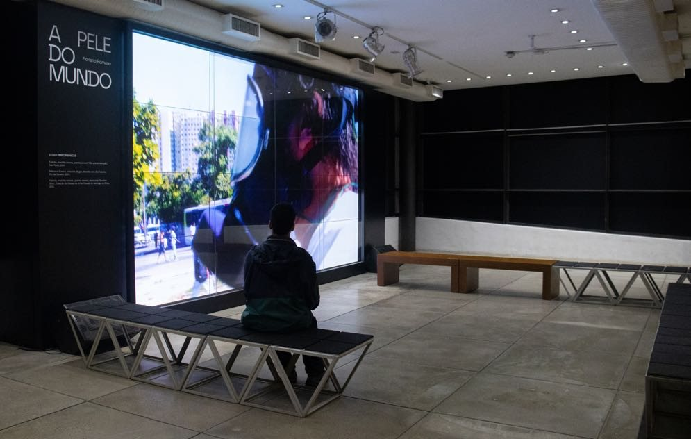
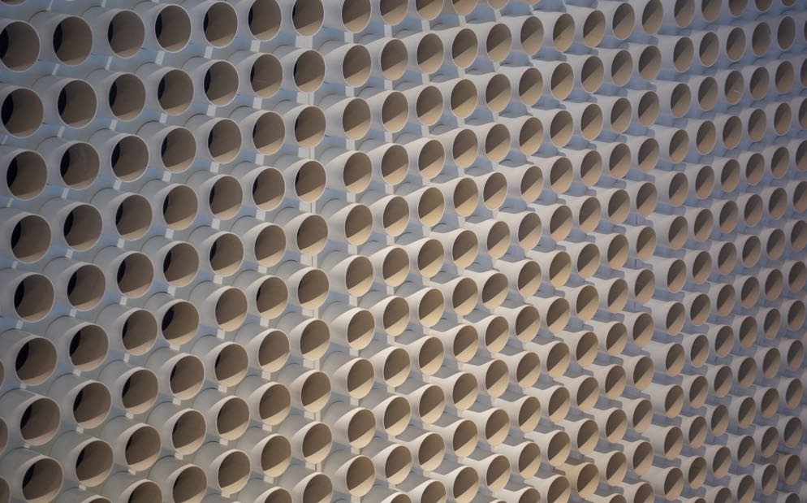

Exposições
Individuais
2023
A Pele do Mundo
Exposição individual com curadoria de Michael Asbury. Reuniu a instalação Esquina, a série Esquinas I–X, Turbina, Chuveiros Sonoros, Espreguiçadeiras Sonoras e os vídeos Máscara Sonora e Falante.
 Esquina2023
Esquina2023 Esquinas I–X2023
Esquinas I–X2023
Máscara Sonora2011 / 2023
Turbina2013 / 2023 Espreguiçadeiras Sonoras2016
Espreguiçadeiras Sonoras2016 Chuveiros Sonoros2008
Chuveiros Sonoros2008
Catálogo bilíngue, Refresco / Futuros, 2023, ISBN 978-65982255-0-6
2021
Cidade Labirinto
Exposição individual composta por instalação no Centro Municipal de Arte Hélio Oiticica e por exposição digital com podcast.


2020
Poema Tornado
Exposição individual com curadoria de Marisa Flórido.
2018
Nuvem
Instalação sonora com guarda-chuvas.
2016
Muro de Som
Exposição individual com curadoria de Guilherme Bueno. Reuniu Muro de Som, Binóculos Sonoros e Espreguiçadeiras Sonoras.


2016
Errância
Exposição individual realizada pelo Prêmio CCBB Contemporâneo, na Sala A Contemporânea.


2013
Sonar
Exposição individual com curadoria de Glória Ferreira.

2012
A Cidade Sonora
Exposição individual realizada pelo Prêmio Projéteis de Arte Contemporânea, Funarte.


Coletivas em destaque
2024
Virada Sônica: a escalada do som na arte contemporânea ↗
Exposição internacional de arte sonora, com obras de John Cage a artistas contemporâneos. Floriano Romano apresentou Espreguiçadeiras Sonoras (2016), com o som do mar de Ipanema. Catálogo digital.
2021–2022
Brasilidade Pós-Modernismo 1922–2022
Exposição coletiva pelo centenário da Semana de Arte Moderna de 1922, com 51 artistas, entre eles Adriana Varejão, Cildo Meireles, Ernesto Neto, Lenora de Barros, Mira Schendel, Rosana Paulino e Tunga. Floriano Romano participou com Radionovelas (Coleção Sérgio Carvalho), no núcleo Estética. Rio de Janeiro, 1º de setembro a 22 de novembro de 2021; São Paulo, 15 de dezembro de 2021 a 7 de março de 2022; Brasília, 5 de abril a 5 de junho de 2022; Belo Horizonte, 29 de junho a 19 de setembro de 2022. Catálogo bilíngue.
2017
Media Art Festival Arad, 4ª edição — CINEMA ↗
Festival internacional de arte e mídia. Falante (2007, 7 min 53 s) integrou o programa de vídeos continental drift.

2012
SOUNDWORKS ↗
Projeto do ICA apresentado junto à exposição Days, de Bruce Nauman: mais de cem artistas internacionais, convidados pelo ICA e por instituições de vários países, criaram obras sonoras a partir de Days, reunidas num site e nas galerias. Floriano Romano participou com um poema sonoro.
Coletivas (seleção)
- 2023 Espaços do Ainda, Centro Cultural São Paulo — curadoria de Luiz Cláudio da Costa
- 2022 Espaços do Ainda, Paço Imperial, Rio de Janeiro — curadoria de Luiz Cláudio da Costa
- 2022 Falante, performance, Sesc Flamengo, Rio de Janeiro
- 2020 Até onde a vista alcança, Galeria Athena Contemporânea, Rio de Janeiro
- 2019 SomaRumor, Seminário Internacional de Arte Sonora, Rio de Janeiro
2018
Arte pra Sentir
Exposição coletiva com obras voltadas a outros sentidos além da visão.
2018
Corpo de Som, com Helen Cole e Alex Bradley — Festival Panorama
Exposição coletiva sobre o corpo e o som.
- 2017 Intervenções Bradesco ArtRio, Museu de Arte Moderna do Rio de Janeiro
- 2017 Contraponto, Coleção Sérgio Carvalho, Museu Nacional de Brasília
2016
Paquetá Experimenta
Exposição coletiva com obras realizadas a partir de uma imersão na Ilha de Paquetá.
2015
Permanências e Destruições
Exposição coletiva num antigo hotel de 1922.
2015
TRIO Bienal — Forma e Matéria: Limites do Tridimensional em Campos Expandidos
Primeira bienal do Rio de Janeiro dedicada à arte tridimensional.
- 2015 Happenings, performance com Máscara Sonora, Casa França-Brasil, Rio de Janeiro
2015
Aparição
Exposição coletiva com dezessete artistas, dedicada à escultura.
- 2012 Alternative Orders, a Glimpse of Brazilian Art, Akershus Kunstsenter, Lillestrøm, Noruega
- 2012 Nuestro Sitio, Museo de Artes Visuales, Santiago do Chile
- 2011 Panorama da Arte Brasileira, Sapatos Sonoros, Museu de Arte Moderna de São Paulo
- 2011 Vozes Diferenciais, Falante, Centro Provincial de Diseño y Oficios, Havana, Cuba
- 2011 Intrasom, quatro ações sonoras, Museu de Arte Moderna do Rio de Janeiro
- 2010 Esculturas Sonoras Urbanas, Circuito Interações Estéticas, São Paulo, Recife e Belo Horizonte
- 2009 7ª Bienal do Mercosul — Chuveiros Sonoros (Mostra Absurdo) e Radiovisual, Porto Alegre
- 2009 Chapéu Panorâmico, Museu de Arte Contemporânea de Niterói
- 2007 58º Salão de Abril, Falante — menção honrosa, Fortaleza
- 2007 Futuro do Presente, Itaú Cultural, São Paulo
- 2006 Paradoxos, Rumos Itaú Cultural, Paço Imperial, Rio de Janeiro, e São Paulo
- 2006 Conversations, SKUC Gallery, Liubliana, Eslovênia
- 2005 Verbo, Galeria Vermelho, São Paulo
- 2005 Abre-Alas, A Gentil Carioca, Rio de Janeiro